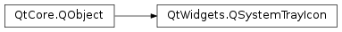

QSystemTrayIcon¶
Synopsis¶
Functions¶
- def
contextMenu() - def
geometry() - def
icon() - def
isVisible() - def
setContextMenu(menu) - def
setIcon(icon) - def
setToolTip(tip) - def
toolTip()
Slots¶
- def
hide() - def
setVisible(visible) - def
show() - def
showMessage(title, msg, icon[, msecs=10000]) - def
showMessage(title, msg[, icon=QSystemTrayIcon.Information[, msecs=10000]])
Signals¶
- def
activated(reason) - def
messageClicked()
Static functions¶
- def
isSystemTrayAvailable() - def
supportsMessages()
Detailed Description¶
The
PySide2.QtWidgets.QSystemTrayIconclass provides an icon for an application in the system tray.Modern operating systems usually provide a special area on the desktop, called the system tray or notification area , where long-running applications can display icons and short messages.

The
PySide2.QtWidgets.QSystemTrayIconclass can be used on the following platforms:
- All supported versions of Windows.
- All window managers and independent tray implementations for X11 that implement the http://standards.freedesktop.org/systemtray-spec/systemtray-spec-0.2.html freedesktop.org XEmbed system tray specification.
- All X11 desktop environments that implement the D-Bus http://www.freedesktop.org/wiki/Specifications/StatusNotifierItem/StatusNotifierItem specification, including recent versions of KDE and Unity.
- All supported versions of macOS .
To check whether a system tray is present on the user’s desktop, call the
QSystemTrayIcon.isSystemTrayAvailable()static function.To add a system tray entry, create a
PySide2.QtWidgets.QSystemTrayIconobject, callPySide2.QtWidgets.QSystemTrayIcon.setContextMenu()to provide a context menu for the icon, and callPySide2.QtWidgets.QSystemTrayIcon.show()to make it visible in the system tray. Status notification messages (“balloon messages”) can be displayed at any time usingPySide2.QtWidgets.QSystemTrayIcon.showMessage().If the system tray is unavailable when a system tray icon is constructed, but becomes available later,
PySide2.QtWidgets.QSystemTrayIconwill automatically add an entry for the application in the system tray if the icon isvisible().The
PySide2.QtWidgets.QSystemTrayIcon.activated()signal is emitted when the user activates the icon.Only on X11, when a tooltip is requested, the
PySide2.QtWidgets.QSystemTrayIconreceives aPySide2.QtGui.QHelpEventof typeQEvent.ToolTip. Additionally, thePySide2.QtWidgets.QSystemTrayIconreceives wheel events of typeQEvent.Wheel. These are not supported on any other platform.
-
class
PySide2.QtWidgets.QSystemTrayIcon([parent=nullptr])¶ -
class
PySide2.QtWidgets.QSystemTrayIcon(icon[, parent=nullptr]) Parameters: - icon –
PySide2.QtGui.QIcon - parent –
PySide2.QtCore.QObject
Constructs a
PySide2.QtWidgets.QSystemTrayIconobject with the givenparent.The icon is initially invisible.
See also
visible()Constructs a
PySide2.QtWidgets.QSystemTrayIconobject with the giveniconandparent.The icon is initially invisible.
See also
visible()- icon –
-
PySide2.QtWidgets.QSystemTrayIcon.ActivationReason¶ This enum describes the reason the system tray was activated.
Constant Description QSystemTrayIcon.Unknown Unknown reason QSystemTrayIcon.Context The context menu for the system tray entry was requested QSystemTrayIcon.DoubleClick The system tray entry was double clicked. Note
On macOS , a double click will only be emitted if no context menu is set, since the menu opens on mouse press
Constant Description QSystemTrayIcon.Trigger The system tray entry was clicked QSystemTrayIcon.MiddleClick The system tray entry was clicked with the middle mouse button
-
PySide2.QtWidgets.QSystemTrayIcon.MessageIcon¶ This enum describes the icon that is shown when a balloon message is displayed.
Constant Description QSystemTrayIcon.NoIcon No icon is shown. QSystemTrayIcon.Information An information icon is shown. QSystemTrayIcon.Warning A standard warning icon is shown. QSystemTrayIcon.Critical A critical warning icon is shown. See also
-
PySide2.QtWidgets.QSystemTrayIcon.activated(reason)¶ Parameters: reason – PySide2.QtWidgets.QSystemTrayIcon.ActivationReason
-
PySide2.QtWidgets.QSystemTrayIcon.contextMenu()¶ Return type: PySide2.QtWidgets.QMenuReturns the current context menu for the system tray entry.
-
PySide2.QtWidgets.QSystemTrayIcon.geometry()¶ Return type: PySide2.QtCore.QRectReturns the geometry of the system tray icon in screen coordinates.
See also
visible()
-
PySide2.QtWidgets.QSystemTrayIcon.hide()¶ Hides the system tray entry.
See also
PySide2.QtWidgets.QSystemTrayIcon.show()visible()
-
PySide2.QtWidgets.QSystemTrayIcon.icon()¶ Return type: PySide2.QtGui.QIcon
-
static
PySide2.QtWidgets.QSystemTrayIcon.isSystemTrayAvailable()¶ Return type: PySide2.QtCore.boolReturns
trueif the system tray is available; otherwise returnsfalse.If the system tray is currently unavailable but becomes available later,
PySide2.QtWidgets.QSystemTrayIconwill automatically add an entry in the system tray if it isvisible().
-
PySide2.QtWidgets.QSystemTrayIcon.isVisible()¶ Return type: PySide2.QtCore.bool
-
PySide2.QtWidgets.QSystemTrayIcon.messageClicked()¶
-
PySide2.QtWidgets.QSystemTrayIcon.setContextMenu(menu)¶ Parameters: menu – PySide2.QtWidgets.QMenuSets the specified
menuto be the context menu for the system tray icon.The menu will pop up when the user requests the context menu for the system tray icon by clicking the mouse button.
On macOS , this is currenly converted to a NSMenu, so the aboutToHide() signal is not emitted.
Note
The system tray icon does not take ownership of the menu. You must ensure that it is deleted at the appropriate time by, for example, creating the menu with a suitable parent object.
-
PySide2.QtWidgets.QSystemTrayIcon.setIcon(icon)¶ Parameters: icon – PySide2.QtGui.QIcon
-
PySide2.QtWidgets.QSystemTrayIcon.setToolTip(tip)¶ Parameters: tip – unicode
-
PySide2.QtWidgets.QSystemTrayIcon.setVisible(visible)¶ Parameters: visible – PySide2.QtCore.bool
-
PySide2.QtWidgets.QSystemTrayIcon.show()¶ Shows the icon in the system tray.
See also
PySide2.QtWidgets.QSystemTrayIcon.hide()visible()
-
PySide2.QtWidgets.QSystemTrayIcon.showMessage(title, msg, icon[, msecs=10000])¶ Parameters: - title – unicode
- msg – unicode
- icon –
PySide2.QtGui.QIcon - msecs –
PySide2.QtCore.int
This function overloads
PySide2.QtWidgets.QSystemTrayIcon.showMessage().Shows a balloon message for the entry with the given
title,message, and custom iconiconfor the time specified inmillisecondsTimeoutHint.
-
PySide2.QtWidgets.QSystemTrayIcon.showMessage(title, msg[, icon=QSystemTrayIcon.Information[, msecs=10000]]) Parameters: - title – unicode
- msg – unicode
- icon –
PySide2.QtWidgets.QSystemTrayIcon.MessageIcon - msecs –
PySide2.QtCore.int
Shows a balloon message for the entry with the given
title,messageandiconfor the time specified inmillisecondsTimeoutHint.titleandmessagemust be plain text strings.Message can be clicked by the user; the
PySide2.QtWidgets.QSystemTrayIcon.messageClicked()signal will emitted when this occurs.Note that display of messages are dependent on the system configuration and user preferences, and that messages may not appear at all. Hence, it should not be relied upon as the sole means for providing critical information.
On Windows, the
millisecondsTimeoutHintis usually ignored by the system when the application has focus.Has been turned into a slot in Qt 5.2.
-
static
PySide2.QtWidgets.QSystemTrayIcon.supportsMessages()¶ Return type: PySide2.QtCore.boolReturns
trueif the system tray supports balloon messages; otherwise returnsfalse.
-
PySide2.QtWidgets.QSystemTrayIcon.toolTip()¶ Return type: unicode
© 2018 The Qt Company Ltd. Documentation contributions included herein are the copyrights of their respective owners. The documentation provided herein is licensed under the terms of the GNU Free Documentation License version 1.3 as published by the Free Software Foundation. Qt and respective logos are trademarks of The Qt Company Ltd. in Finland and/or other countries worldwide. All other trademarks are property of their respective owners.